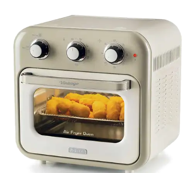

| Alimento | Funzione | Indicazione |
|---|---|---|
| Patatine surgelate | Air Fryer | 230 °C · 15–20 min |
| Patate fresche | Air Fryer | 230 °C · 20–25 min |
| Pesce | Air Fryer | 200 °C · 18–20 min |
| Riscaldare | Air Fryer | 120 °C · 15 min |
| Pizza | Oven | 230 °C · 20–25 min |
| Pane / focaccia | Oven | 200 °C · 20–30 min |
I tempi sono indicativi: quantità e spessore degli alimenti possono richiedere qualche minuto in più o in meno.
Sportello, vetro e accessori diventano molto caldi. Apri solo dalla maniglia e usa guanti o presine per estrarre teglia e griglia.
Non versare grandi quantità di liquido nella leccarda e non versare acqua sul vetro quando è caldo.